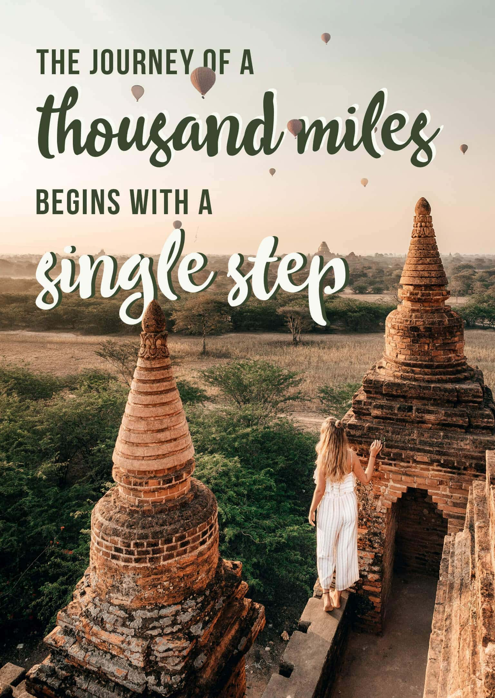
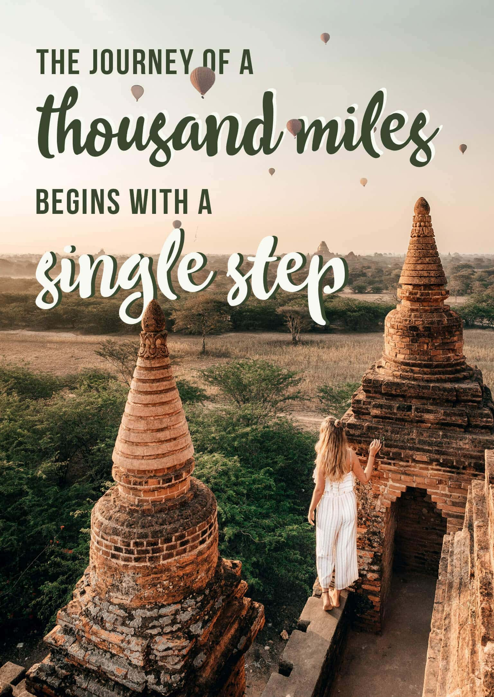

About Me
Hi, my name is Anita Pea and I am the author of this travel blog. I have always had a passion for exploring new places and learning about different cultures. After finishing college, I decided to take a gap year and travel the world. This experience changed my life and inspired me to share my adventures through this blog.
Throughout my travels, I have had many unforgettable experiences and made countless memories. Some of my favorite moments include hiking Machu Picchu, swimming with dolphins in Hawaii, and trying new foods in Italy. I believe that travel is not only about seeing new places, but also about discovering more about oneself and the world.
Here are some of my personal photos and anecdotes related to travel:

 

But don't just take my word for it. Here are some testimonials from fellow travelers who have enjoyed reading my blog:
"I love following Jane's travels on her blog. Her writing style is engaging and her photos are beautiful. She inspires me to plan my own adventures!"
"As someone who is hesitant about traveling, I find Jane's blog to be a great resource. She provides practical advice and encourages readers to step out of their comfort zones."